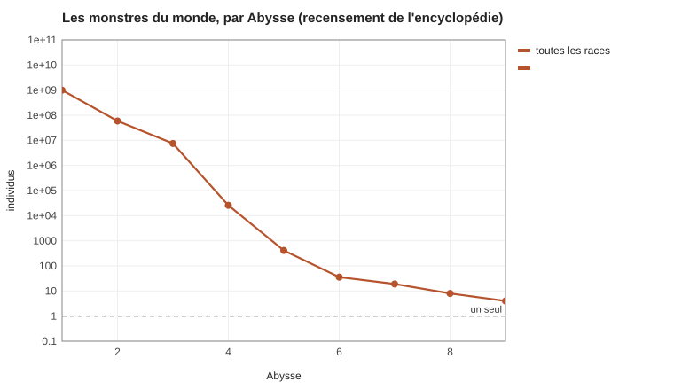
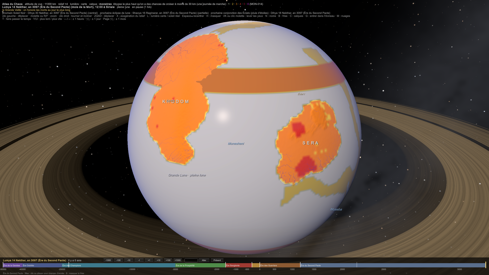

MON-014 — Recensement des monstres
Canon par délégation. Combien il y a de monstres dans le monde, de quelle sorte, et où. Les chiffres sortent de SIM-24 Le recensement des monstres, qui lit les données des treize fiches de l'encyclopédie (de MON-001 Primordiaux I - la terre à MON-013 Artificiels). Pour trouver une race : MON-015 Index des monstres.
1. Ce que compte le recensement
- 307 races , réparties entre les douze catégories (MON-000 Classification des monstres).
- 113 races sont calculées à partir de la chaîne alimentaire : la biomasse de chaque milieu, la loi des 10 % entre deux Abysses (SIM-22 Les Abysses), puis le partage entre les races qui occupent la même place.
- 194 races sont estimées (172 par l'effectif que donne leur fiche, 22 par le barème ci-dessous, surtout des Élémentaires). Ce sont celles qui ne vivent pas de la chaîne : les uniques, les Mythiques, les fabriqués, les flux, les Anomalies, les morts attachés. Leur effectif vient de leur fiche, ou à défaut d'un barème de rareté :
| Rareté | Effectif |
|---|---|
| très commun | 1 million |
| commun | 100 000 |
| peu commun | 10 000 |
| rare | 1 000 |
| très rare | 100 |
| unique | 1 |
D'un niveau de la chaîne alimentaire au suivant, il ne passe qu'environ 10 % de l'énergie (Lindeman, 1942). C'est pour cela qu'il y a dix fois moins de lions que de gazelles en masse, et qu'aucune chaîne réelle ne compte plus de cinq ou six maillons.
2. Les résultats par catégorie
| Catégorie | Races | Individus |
|---|---|---|
| Primordiaux | 82 | 600 millions |
| Parasitiques | 19 | 58 millions |
| Essaims | 17 | 19 millions (des corps, pas des essaims) |
| Altérés | 20 | 6,6 millions |
| Spectraux | 26 | 4,0 millions |
| Élémentaires | 27 | 685 000 |
| Nécro-intégrés | 13 | 175 000 |
| Artificiels | 33 | 98 000 |
| Draconiques | 20 | 97 000 |
| Chthoniens | 18 | 55 000 |
| Anomalies | 16 | 21 000 |
| Mythiques | 11 | 11 |
Ce qu'il faut en retenir.
- Le monde compte environ 714 millions de monstres , dont près de la moitié sont des plantes. Pour comparer : le monde compte environ 237 millions de mortels (Géographie - Atlas démographique). Sans les plantes, cela fait à peu près un monstre par mortel, mais la plupart vivent là où les mortels ne vont pas.
- Les plantes monstrueuses sont la base de tout. La Fleur-Explosive à elle seule fait 300 millions de pieds, presque tous à Maakar, où elle est la seule plante de Chaos qui tienne au vent des îles. Le Ver-forge des sources chaudes en fait 100 millions dans les grands fonds.
- Les monstres qu'on rencontre sont petits. Les plus nombreux des animaux sont des charognards et des chasseurs de quelques kilos : Tricorax (98 millions), Chakals d'Écume (56 millions). Le monstre type n'est pas un géant. C'est une bête de la taille d'un chien, qu'on trouve partout à la lisière des territoires.
- Les parasites sont la vraie plaie. La Sangsue de Nulthar (30 millions) et le Ver-Appât (20 millions) touchent plus de mortels que tous les prédateurs ensemble.
- Les dragons sont rares. On en compte ≈ 107 000 en tout, dont 44 000 sont des petites Wyvernes de Vesha. Il n'y a que 18 Dragons de Basalte et 17 Dragons de Givre dans le monde.
3. Les résultats par Abysse

| Abysse | Individus | Ce que ça veut dire |
|---|---|---|
| 1 | 656 millions | la faune, les plantes, la vermine |
| 2 | 51 millions | les chasseurs ordinaires, les Essaims marins |
| 3 | 7,0 millions | ce qui tue un homme armé |
| 4 | 26 000 | ce qui tue une troupe |
| 5 | 395 | ce qui ravage une région |
| 6 | 36 | les Godkillers : un par grand territoire, un par mer |
| 7 | 19 | des êtres hors chaîne : parasites de Léviathans, Chthoniens, Artificiels de Tamaati |
| 8 | 8 | un par type, au plus |
| 9 | 4 | le Dragon Noir et sa Couvée |
Chaque Abysse compte environ dix fois moins d'individus que le précédent jusqu'à 4, puis la pente devient plus raide. Au-delà de 6, plus rien ne vient de la chaîne alimentaire : tout ce qui monte plus haut a mangé autre chose (des âmes, des mages, des dieux) ou a été fabriqué.
4. Les résultats par région
| Région | Monstres calculés | Ce qui domine |
|---|---|---|
| Maakar | 307 millions | la Fleur-Explosive |
| les mers | 147 millions | le Ver-forge, les Essaims marins, les chasseurs de la bande de l'Anneau |
| Khodom | 116 millions | Tricorax, Chakals d'Écume, monstres des lisières (20 % des terres en territoire) |
| Sera | 39 millions | les lisières, les parasites, les marais |
| Tawurt | 15 millions | les Sangsues et les Moucherons de Nulthar |
| les Terres de l'Est | 1 million | des lisières sans peuple pour les nourrir |
| l'archipel des Hejeti | 4 000 | des côtes froides et pauvres |
| les Terres australes | une dizaine | presque rien : la toundra ne nourrit que les Dragons de Givre |
5. Ce que la simulation a corrigé
- Le Léviathan des fonds. Par la seule chaîne des grands fonds, on n'en trouve même pas un. Sa fiche le dit : il boit le Chaos que recrachent les sources chaudes, comme les géants terrestres boivent l'air des territoires. Il est donc compté hors chaîne : deux individus.
- La Wyverne des falaises était codée aussi en haute mer : elle en sortait à 4,7 millions. Elle chasse depuis les falaises, elle ne vit pas au large. Corrigé, il en reste 6 600.
- Les Élémentaires n'avaient pas d'effectif : ce sont des flux, pas des maillons. On leur applique le barème de rareté (685 000 en tout, surtout des Feux-Errants, des Djinns des sables, des Vagues vivantes et des Racines-Cyclones).
- Les quatre Léviathans d'Abysse 6 sortent à 2 à 4 individus chacun. C'est ce que disaient leurs fiches (« un ou deux »), et ce que donnait déjà SIM-23 Les océans.
6. Comparaison avec SIM-22 et SIM-23
- SIM-22 Les Abysses donnait 27 millions de monstres d'Abysse 1 sur les terres, avec une masse moyenne. Le recensement en trouve 157 millions d'animaux d'Abysse 1 à terre. La biomasse est la même ; la différence vient de la masse : l'encyclopédie peuple les lisières de petits monstres de 4 à 15 kg.
- SIM-22 trouvait environ 170 monstres d'Abysse 5 et 9 d'Abysse 6. Le recensement en trouve 395 et 36, parce qu'il ajoute les mers, les êtres hors chaîne et les maîtres de territoire.
- SIM-23 Les océans trouvait 180 millions de monstres marins d'Abysse 1. L'encyclopédie place la plupart des chasseurs marins à l'Abysse 2 (38 millions), et compte en plus 100 millions de Vers-forges.
7. Ce que l'encyclopédie ajoute au monde
Les agents qui ont écrit les fiches ont tiré des règles quelques conséquences nouvelles. Elles sont canon par délégation ; l'auteur peut toujours les reprendre.
La biologie.
- Les chimères naturelles : deux monstres morts l'un dans l'autre au cœur d'un territoire, dont le Chaos reconstruit un seul corps. C'est la seule façon, sans dieu, d'avoir un vertébré à plus de quatre membres. La chimère est fertile et fonde une lignée (MON-001 Primordiaux I - la terre).
- Le fer, protection et appât : le fer porté éloigne la plupart des monstres, puisqu'il avale le Chaos. Mais le Brise-coques est attiré par les coques de fer chauffées par le Chaos d'Amamu. D'où la technique des coques froides de Kemazo : on arrose le fer d'eau de mer pendant toute la traversée de la bande (MON-002 Primordiaux II - mers, plantes et géants).
- Les parasites de monstres : la Tique de Noyau boit le noyau de son hôte. Le Cavalier des Léviathans atteint l'Abysse 7 en vivant sur un Léviathan, conformément au plafond des Parasitiques, qui est celui de l'hôte plus un (MON-006 Parasitiques).
- Les espèces et leurs individus mythiques : le Mangeur de Noms, l'Aigle-Tonnerre, la Grande Rochline, le Roi-Lion du Chaos et l'Ancêtre des crocodiles sont chacun le seul de leur espèce à avoir dépassé le plafond. L'espèce garde son nom ; l'individu porte un nom à part en Logar (Nejesamareni pour les petits Mangeurs de Noms, le suffixe -were, « grand », pour les autres).
Le Dragon Noir et les dieux.
- Le Dragon Noir est né d'une lignée de grands reptiles à l'Ère des Champions. Un dieu en a fait son champion, et le dragon l'a dévoré. Il a ensuite continué à monter en mangeant des champions, des héritiers et des mages, puis s'est condensé sans perdre son agitation. Son monde intérieur, le Nid, a éclos, et la loi de séparation l'a envoyé dans le plan divin. Les savants lui prêtent un concept qu'aucun dieu ne peut porter : l'Insoumis. Personne ne connaît son vrai nom ; Kemenebu n'est qu'un surnom. Il n'a jamais signé de Pacte (MON-003 Draconiques).
- La Couvée Noire : les dragons qui atteignent l'éclosion le rejoignent dans le plan divin. On en connaît trois ; chacun a laissé derrière lui une région vidée de ses puissants.
- Le Gardien du Tome veille dans le plan divin sur le Tome Sacré, qui rend les Pactes contraignants (MON-013 Artificiels).
- Les larmes de dieu : les éclats d'un dieu blessé, trop petits pour former un monde, tombent dans le monde du Premier Fils et changent ce qu'ils touchent. Ils donnent les Touchés-de-Dieu. Les Chus sont des dieux retombés (MON-012 Altérés).
- Le Mangeur de Noms a servi à effacer le nom du dieu des Dimensions, pendant les guerres de l'Ère Sanglante (MON-004 Mythiques).
L'histoire et les lieux.
- L'Éclat vivant et l'Enfant de la Fissure (sous la porte) sont des témoins des origines et des frontières (MON-004 Mythiques).
- Tamaati a laissé des machines : le Colosse de Sahraka, à l'Abysse 6, dort dans les ruines sous Khal'daras ; d'autres restes se trouvent dans la Gueule de Fer de Khodom ; les Scribes de Tamaati forment un Essaim artificiel (MON-013 Artificiels, MON-008 Essaims).
- Le Chien de Hesef est une machine divine qui punit les serments rompus (MON-013 Artificiels).
- La ferme d'Hekaet a produit deux familles de monstres. Les Rejetons d'Hekaet, voulus, sont des Artificiels. Les Rebuts de la Ferme, ratés, sont des Altérés (CIV-008 Les Hejeti).
- Les Prédateurs de passage gardent les gués, les seuils et les carrefours. Les Mangeurs de seuils sont le prix du fer : ils vivent de la pente raide que le fer crée à côté de lui, et un seuil ferré très ancien finit par en avoir un (MON-009 Élémentaires).
- Les forges dormantes de Siriale : on les bâtit au-dessus d'un Feu-Dormant, et elles prennent leur chaleur au sol par des puits. Ce sont les plus convoitées du royaume (MON-009 Élémentaires).
7 bis. Sur la carte de l'Atlas (calque « monstres », touche C)
Le script export_monstres_atlas.py écrit la densité de chaque race dans chaque case (continent, milieu), dans atlas/Data/monstres.json. L'Atlas range chaque point de la carte dans son continent et ses milieux :
- sur terre : le cœur ou la lisière d'un territoire, le biome, la montagne, la côte, le marais, la ville ; plus une petite part de ruines, de souterrains, de volcans et de vieux champs de bataille ;
- en mer : la bande de l'Anneau, la mer de Tawurt, les dorsales (les grands fonds), la mer calme.
Pour chaque point, il additionne les densités des races présentes.
- Le calque colore chaque lieu selon l'Abysse le plus haut qu'on a des chances de croiser à moins de 30 km, soit une journée de marche (au moins un demi-individu dans ce rayon).
- Au survol, il donne ce danger avec la race en cause, et les cinq races les plus nombreuses, chacune avec son Abysse et sa fréquence.
Le danger par degré carré de la planète :
| Danger | Degrés carrés | Où |
|---|---|---|
| aucun | ≈ 50 000 | la mer calme, presque toute la planète |
| Abysse 1 et 2 | ≈ 5 400 | |
| Abysse 3 | ≈ 9 400 | presque toutes les terres et la bande de l'Anneau |
| Abysse 4 | ≈ 150 | les cœurs des territoires (le Grand Territoire de Sera), Tawurt |
Rien au-delà : à l'échelle d'une journée de marche, les Abysses 5 et plus sont trop rares pour être « probables ». On les croise par malchance, ou parce qu'on va les chercher.
Quatre êtres restent hors de la carte : le Dragon Noir, la Couvée Noire et le Gardien du Tome, qui sont dans le plan divin, et le Grand Gardien, qui est entre les plans.

8. Le tableau complet
Les 307 races, avec leur effectif mondial et la région où elles sont le plus nombreuses :
recensement
Liens
MON-000 Classification des monstres · MON-015 Index des monstres · SIM-24 Le recensement des monstres · SIM-22 Les Abysses · SIM-23 Les océans · BIO-010 Les monstres